01
Flowdesk AI
SaaS · Ürün web sitesi
Ürün arayüzünü ve yapay zekâ destekli iş akışlarını öne çıkaran, anlaşılır ve odaklı bir ürün tanıtım sayfası.
Projeyi GörGeçici proje bağlantısıBen Aden. Markaların karakterini, insanların kullanmaktan keyif aldığı web sitelerine dönüştürüyorum.
Çalışmaları keşfet
SaaS · Ürün web sitesi
Ürün arayüzünü ve yapay zekâ destekli iş akışlarını öne çıkaran, anlaşılır ve odaklı bir ürün tanıtım sayfası.
Projeyi GörGeçici proje bağlantısı
Mimarlık · Kurumsal web sitesi
Proje görsellerini ve tipografiyi merkeze alan, mimari yaklaşımı dijitale taşıyan sade bir portföy deneyimi.
Projeyi GörGeçici proje bağlantısı
Eğitim · Kurumsal web sitesi
Eğitim yapısını ve kurumsal iletişimi, kolay keşfedilen ve tüm ekranlara uyum sağlayan bir deneyimde buluşturan web sitesi.
Projeyi GörGeçici proje bağlantısıSadece iyi görünen değil,
doğru hissettiren
web siteleri.
Tasarımı, bir markanın kendini ifade etme biçimi olarak görüyorum. Görsel dili, içeriği ve kullanımı birlikte düşünerek sade, hızlı ve işletmenin karakterini yansıtan web siteleri tasarlıyor ve geliştiriyorum.
İhtiyacınız neyse,
odağım orada.
Markanızın dilini dijitale taşıyan, ziyaretçiye güven veren ve içeriğe kolayca ulaştıran web siteleri.
Tek bir ürün, hizmet veya kampanyaya odaklanan; mesajı kısa ve güçlü biçimde anlatan sayfalar.
İşlerinizi öne çıkaran, kişisel yaklaşımınızı ve tasarım dilinizi yansıtan dijital alanlar.
Ürünün değerini anlaşılır kılan; arayüzü, özellikleri ve kullanım senaryolarını bir araya getiren deneyimler.
Hedefi, kapsamı ve öncelikleri birlikte netleştiriyoruz.
Sayfa akışını ve markanıza özgü görsel dili oluşturuyorum.
Tasarımı hızlı ve tüm ekranlara uyumlu bir siteye dönüştürüyorum.
Son ayrıntıları tamamlıyor, siteyi yayına hazır teslim ediyorum.
Yeni bir web sitesi veya mevcut siteniz için yeni bir yaklaşım. Birlikte ne yapabileceğimizi konuşalım.